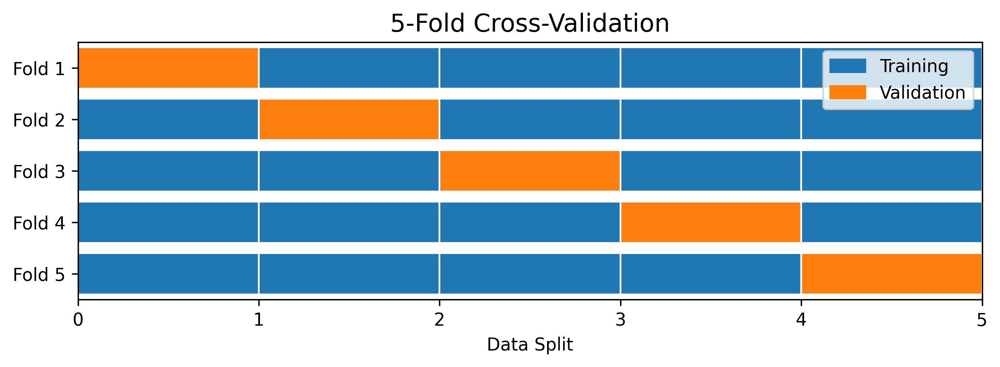

Section 2.7 Model Selection
Suppose you have trained more than one model using the same training data and would like to choose the best among them. That is, you have a number of trained/estimated predictors, \(\hat{f}_1(X), \hat{f}_2(X), \cdots, \hat{f}_q(X)\) and we want to pick “best” among them. This task is called model selection. It is done using a part of the training dataset that is called validation data as we explain below.
Subsection 2.7.1 Validation Data
Since, in the model selection, we cannot yet use the set-aside test dataset to evaluate the final model, you need to set aside a part of your training data itself for the model selection step. This dataset is called validation data. Unlike the set-aside dataset, which is used only on the final model, you can use the validation data as many times as needed during the training.
Peviously, we used \(n\) datapoints as training and \(m\) datapints as set-aside test dataset. Now, we will have three datasets \(n_{t}\) training examples, \(n_{v}\) validation examples and \(m\) testing examples. The proportion of total data that should be placed in the three bins varies from project to project and availability of data. If we have plenty of data to work with, a common breakdown is shown in Figure 2.7.1.
Often we do not have the luxury of plenty of data. Then, we have to be creative how to split all the data that we have to work with into three categories. First, you must set aside a reasonable amount for testing, say \(20\%\text{,}\) for the final model evaluation. Then, you treat the entirety of the rest of the data as both training and validation data, but you do not use the same datapoints in both in any one training cycle. Let’s call this set a combined training dataset. Now, we can choose from several strategies to implement the cross-validation.
- Leave p out cross validation (LOOCV). You do multiple runs through the combined training data, and in each cycle, you leave different \(p\) examples out for validation and use the rest for training. That is, you never use the examples you used for training as validation. In an extereme case of this strategy, there is Leave One Out policy, when \(p=1\text{.}\)
-
A more common strategy is K-fold cross-validation. In each training cycle, you split the combined training data into \(K\) equally sized folds. You use \(K-1\) of these fold for training and one fold for validation as illustrated in Figure 2.7.2.In a stratified K-fold cross-validation, you attempt to ensure that each fold has the same proportions of each class. The stratified K-fold is specially important if you have an imbalanced data, which happens when one class or a number of classes are either over-represented or underrepresented in the dataset.

Subsection 2.7.2 Generalization Error
After training any model, we want the model to perform well on new data. The error on a new data that was not used in the training of the model, is called generalizaton error or out-of-sample error. This error gives us the clearest picture of how the trained model will perform in the “real” world.
Let us illustrate this concept in the context of a regression task of a quantitative or interval target variable \(Y\) and a \(r\)-dimensional feature vector \(\mathbf{X}\) with error being the square error. With the trained predictor \(\hat f(\mathbf{X})\text{,}\) the squared error (a random variable) will be
\begin{equation}
\mathcal{L}(Y, \hat f(\mathbf{X})) = \left( Y - \hat f(\mathbf{X})\right)^2.\tag{2.7.1}
\end{equation}
If you evaluate it’s expectation in the training dataset \(\mathcal{D}_t = \{ (x^{(i)}), y^{(i)}), i = 1, 2, \cdots, n_t \}\text{,}\) we call the result the training error or in-sample error.
\begin{equation*}
\mathcal{L}_\text{in} = \frac{1}{n_t}\sum_{i=1}^{n_t}\, \left( y^{(i)} - \hat f(\mathbf{x}^{(i)})\right)^2.
\end{equation*}
This is of course of not much use since this error is on the same datapoints that were used to produce the trained model \(\hat f(\mathbf{X})\) in the first place. It is mostly used for diagnositc purposes since this error shoudl go down with each training of the model as the model “learns” to fit better and better to the training dataset.
Evaluating the error of Eq. (2.7.1) on a new data \(\left( \mathbf{x}^{(0)}, y^{(0)} \right)\text{,}\) we will get
\begin{equation*}
\mathcal{l}^{(0)} = \left(y^{(0)} - \hat f(\mathbf{x}^{(0)})\right)^2.
\end{equation*}
The expectation of the error on a validattion dataset \(\mathcal{D}_v\) it will be
\begin{equation*}
\mathcal{L}_\text{val} = \frac{1}{n_v}\sum_{i=1}^{n_v}\, \left( y^{(i)} - \hat f(\mathbf{x}^{(i)})\right)^2.
\end{equation*}
This is an out-of-sample or generalization error. We use validation error to decide among competing models. Similarly, on a set-aside test dataset,
\begin{equation*}
\mathcal{L}_\text{test} = \frac{1}{m}\sum_{i=1}^{m}\, \left( y^{(i)} - \hat f(\mathbf{x}^{(i)})\right)^2.
\end{equation*}
This is also an out-of-sample or generalization error. We use this test error to evaluate the final model.
Subsection 2.7.3 Sources of Generalization Error
One can understand the sources of generalization errors by looking at ore closely at the errors in a single example. Recall the random nature of \((\mathbf{X}, Y)\) in the fact that for a given \(X\text{,}\) infinitely many values of \(Y\) are possible which are given by the conditional distribution \(\rho(\mathbf{X}, Y)\text{.}\) We usually model the statistical nature of the \(Y\) variable by a random Gaussian noise as follows.
\begin{equation}
Y = f(X) + \epsilon,\tag{2.7.2}
\end{equation}
where
\begin{equation*}
\epsilon \sim \mathcal{N}(0, \sigma_\epsilon^2).
\end{equation*}
When the feature vector has a particulat value, say \(\mathbf{X} = \mathbf{x}^{(0)}\text{,}\) the model will predict \(\hat f(\mathbf{x}^{(0)})\) for \(Y\) is a random variable and it can take any value according to the \(\rho(\mathbf{X}, Y)\text{.}\)
\begin{equation*}
\mathcal{L} = \left(Y - \hat f(\mathbf{x}^{(0)})\right)^2.
\end{equation*}
The theoretical expected value of this error in the distribution \(\rho(\mathbf{X}, Y)\) will be
\begin{equation*}
\mathbb{E}[\mathcal{L}] = \mathbb{E}\left[ \left(Y - \hat f(\mathbf{x}^{(0)})\right)^2 \right].
\end{equation*}
From Eq. (2.7.2), we see that
\begin{equation*}
\mathbb{E}[Y] = f(\mathbf{x}^{(0)}) + \mathbb{E}[\epsilon] = f(\mathbf{x}^{(0)}) + 0,
\end{equation*}
where \(f\) is an unknown non-random function. But, \(\hat f\) is actually a known but random function, since it depends on the training data, which is a sample from the unknown joint distribution \(\rho(\mathbf{X}, Y)\)
Subsection 2.7.4 Overfitting and Underfitting
Similar arguments of using appropriate number of fitting parameters apply to more complicated data distributions - the basic principle being the fewer the fitting parameters that capture the inherent relationship the better. You don’t want so few that you are unable to capture important relationships.
Let’s illustrate this by an example. Suppose, actual \(Y\) is a noisy \(4^\text{th}\) order polynomial of \(X\text{:}\)
\begin{equation*}
Y = b_0 + b_1 X + b_2 X^2 + b_3 X^3 + b_4 X^4 + \epsilon,
\end{equation*}
where \(\epsilon \sim \mathcal{N}(0,1)\text{.}\) If you try to model this data by a lower than \(4^\text{th}\text{,}\) say, by a quadratic polynomial,
\begin{equation*}
Y = w_0 + w_1 X + w_2 X^2,
\end{equation*}
you will find that you do capture some of the trends in the original data, but the fit is not the best you can do. We say that you are underfitting the data. However, if you try to model the data by a \(8^\text{th}\)
\begin{equation*}
Y = w_0 + \sum_{i=`1}^8\, w_i X^i,
\end{equation*}
you are likely to fit not just the trend in the data but also the noise part from the random noise \(\epsilon\text{.}\) This is called overfitting. We say that this model has higher complexity than the simpler one.
Although a study of complexity and degrees of freedom are important theoretically, but we will take a loose account of them by just counting the trainable/fitting variables/parameters in a model as an indicator for the degrees of freedom. You clearly want smallest number of fitting parameters suitable for a given problem. As we sometimes say in physics, "With enough free parameters you can fit a cow!"
Subsection 2.7.5 Bias-Variance Tradeoff
https://www.ibm.com/think/topics/bias-variance-tradeoff has a very clear explanation.
Bias-variance tradeoff is an important concept in statistical learning. It is tied to the complexity of the model and underfitting and overfitting we have mentioned above. In general an underfitting model has a high bias, meaning far from the truth, and low variance, meaning does not fluctuate much about the truth, and an overfitting model has a low bias but high variance. We will learn these terms below in the context of a regression task.
Suppose we generate a random output \(Y\) from a given \(X\) by adding a Gaussian noise to \(f(X)\text{.}\)
\begin{equation*}
Y = f(X) + \epsilon,\quad \epsilon \sim \mathcal{N}(0,1).
\end{equation*}
We do not know the actual \(f\) but can approximate it by \(\hat f\) by minimizing the error function with respect to \(f\) with minimum error being
\begin{equation*}
\mathcal{L}_\text{min} = \mathbb{E}_{Y\mid X}{ \left( Y - \hat f(X) \right)^2 }.
\end{equation*}